01
Ventas · WhatsApp → Planilla
Adiós Excel manual
Cada pedido por WhatsApp o formulario se guarda solo en tu planilla.
Te devuelve ~5 hrs/semana
↓ descargar .json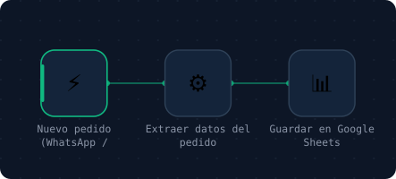
Listos para importar en n8n (gratis). Cada uno trae adentro una nota amarilla con la configuración paso a paso — menos de 30 minutos por flujo, sin escribir una línea de código.
Descarga el flujo que necesitas (archivo .json).
En n8n: Workflow → Import from File y elige el archivo.
Sigue la nota amarilla que viene adentro. Conecta tus cuentas. Activa.
Cada pedido por WhatsApp o formulario se guarda solo en tu planilla.
Te devuelve ~5 hrs/semana
↓ descargar .json
Mensaje nuevo → contacto en HubSpot + recordatorio de seguimiento a las 48h.
Te devuelve las ventas que hoy se enfrían
↓ descargar .json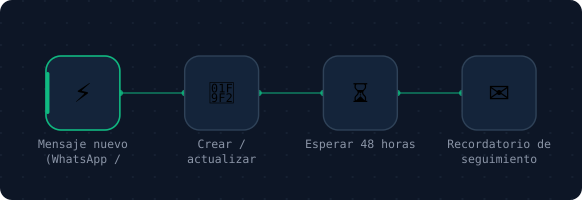
La versión del video: sin software nuevo — cada mensaje cae en una planilla de Google y a las 48h llega el recordatorio al correo.
Empieza aquí si hoy vives en Excel
↓ descargar .json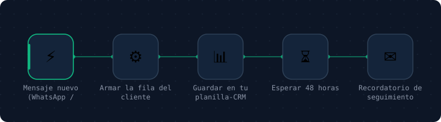
La IA clasifica cada correo y deja el borrador listo. Tú apruebas y envías.
Te devuelve ~1 hr/día
↓ descargar .json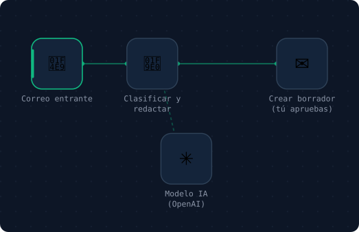
Ventas, pagos y pedidos de todas tus apps en una sola planilla, cada mañana.
Te devuelve claridad en 1 vistazo
↓ descargar .json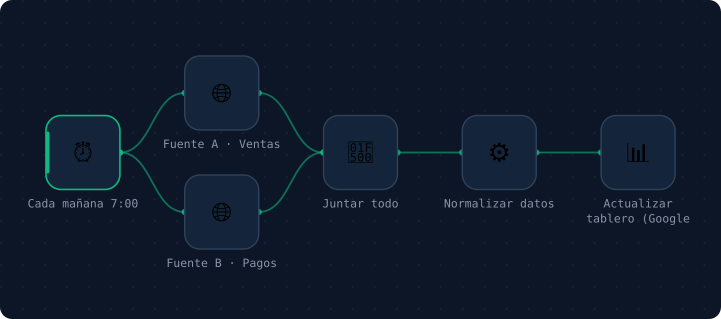
PDF al correo → IA extrae RUT y montos → planilla contable → aviso al contador.
Te devuelve horas de digitación + menos multas
↓ descargar .json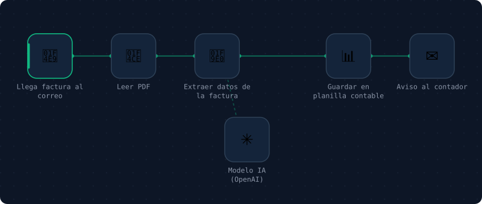
Confirmación inmediata por WhatsApp + recordatorios 24h y 2h antes + reagendar.
Te devuelve hasta 30% de horas perdidas
↓ descargar .json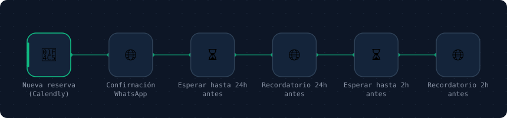
Tus posts en una planilla → publicación automática programada + registro.
Te devuelve presencia sin estar presente
↓ descargar .json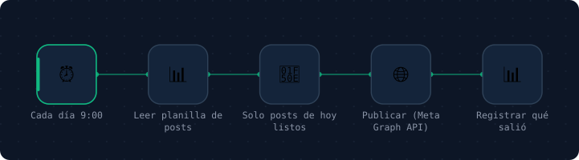
Venta cerrada → 3 días después, mensaje pidiendo reseña con link directo.
Te devuelve reputación que vende sola
↓ descargar .json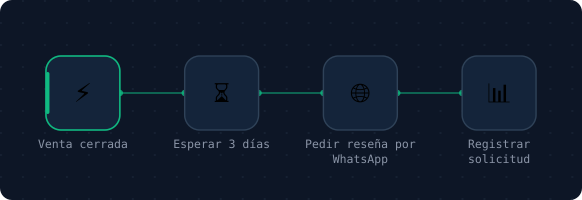
Comentario con palabra clave → DM con tu regalo → captura con consentimiento.
Te devuelve un activo que es tuyo
↓ descargar .json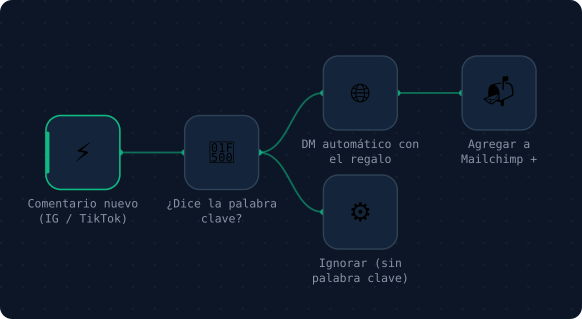
Cada lunes 8:00: ventas, gastos y agenda resumidos por IA, a tu correo.
Te devuelve dirección con datos
↓ descargar .json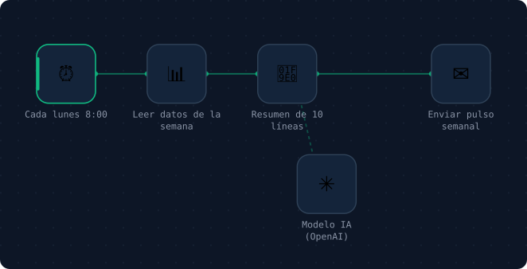
La IA no te reemplaza. Te devuelve tu tiempo.